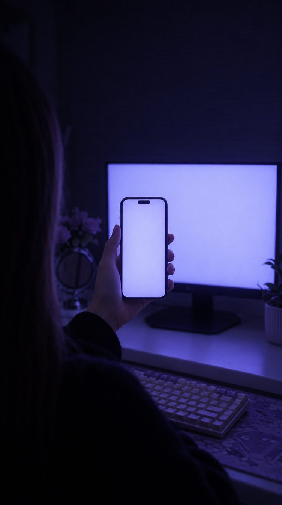

● RECRITA@SITE
БЕСПЛАТНАЯ ПОДБОРКА
7 сайтов с референсами
Где искать идеи для сайта и что искать на каждом.
01 / 07
Awwwards
awwwards.com
Сайты, которые оценивают дизайнеры: «сайт дня», «сайт года». Смелые идеи, анимация, типографика.
ИСКАТЬфильтры по категории, цвету и технологии
02 / 07
Godly
godly.website
Подборка сайтов с сильной анимацией и шрифтами, у каждого видео-превью.
ИСКАТЬпо типу — лендинг, портфолио, магазин
Листай, сохраняй, собирай подборку
03 / 07
Land-book
land-book.com
Тысячи лендингов, разложенных по категориям.
ИСКАТЬсвою нишу в категориях
04 / 07
Lapa Ninja
lapa.ninja
Лендинги по отраслям — удобно смотреть, как делают первый экран.
ИСКАТЬотрасль клиента
05 / 07
SiteInspire
siteinspire.com
Спокойные, аккуратные сайты: портфолио, студии, магазины.
ИСКАТЬпо стилю и типу сайта

Смотри первые экраны и на компьютере, и на телефоне
06 / 07
Mobbin
mobbin.com
Экраны настоящих приложений и сайтов: формы, меню, оплата, регистрация.
ИСКАТЬконкретный экран — например, «checkout»
07 / 07
Refero
refero.design
Поиск по элементам интерфейса и сценариям: карточки, таблицы, онбординг.
ИСКАТЬэлемент, который сейчас проектируете
КАК
Как пользоваться
- Ищите не «красивый сайт», а свою нишу и конкретный блок: первый экран, прайс, форма.
- Сохраняйте 3–5 референсов в одну подборку и подписывайте, что в каждом нравится.
- Берите приёмы, а не сайт целиком: как — в гайде «Своё по референсу».
Часть возможностей Mobbin и Refero платная.